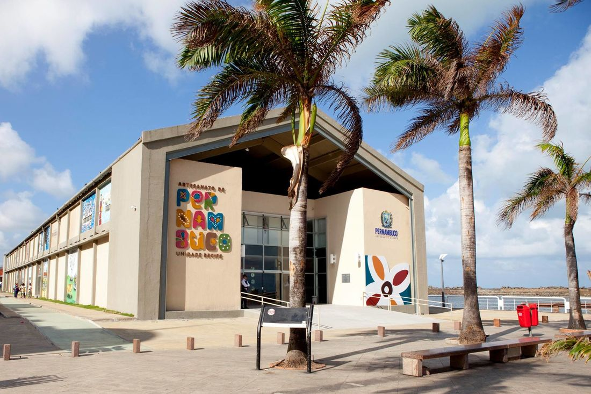

Nosso Recife!
Sabendo que a saudade do recifense pelo Recife é a maior em linha reta, duvido que o povo daqui deixe de tomar aquele caldinho e falar da vida dos outros na Praia de Boa Viagem ou frequentar o Recife Antigo aos domingos pra andar de skate, pedalar pela ciclofaixa ou visitar os museus Cais do Sertão e Paço do Frevo.
Centro de Artesanato
Cais do Certão

Paço do Frevo